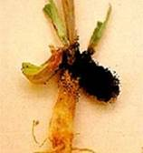
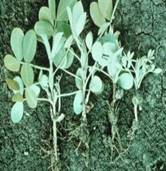
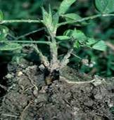
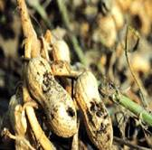

GROUNDNUT :: MAJOR DISEASE :: COLLAR ROT OR SEEDLING BLIGHT OR CROWN ROT
Collar rot or seedling blight or crown rot - Aspergillus niger and A. pulverulentum
Symptoms
The disease usually appears in three phases.
i. Pre-emergence rot
Seeds are attacked by soil-borne conidia and caused rotting of seeds. The seeds are covered with black masses of spores and internal tissues of seed become soft and watery.
ii. Post-emergence rot
The pathogen attacks the emerging young seedling and cause circular brown spots on the cotyledons. The symptom spreads later to the hypocotyl and stem. Brown discolored spots appear on collar region. The affected portion become soft and rotten, resulting in the collapse of the seedling. The collar region is covered by profuse growth of fungus and conidia and affected stem also show shredding symptom.
iii. Crown rot
The infection when occurs in adult plants show crown rot symptoms. Large lesions develop on the stem below the soil and spread upwards along the branches causing drooping of leaves and wilting of plant.
|  |  |  |  |
Symptoms |
|||
The mycelium of the fungus is hyaline to sub-hyaline. Conidiophores arise directly from the substrate and are septate, thick walled, hyaline or olive brown in colour. The vesicles are mostly globose and have two rows of hyaline phialides viz., primary and secondary phialides. The conidial head are dark brown to black. The conidia are globose, dark brown in colour and produce in long chains.
Favourable Conditions
- Deep sowing of seeds.
- High soil temperature (30-35˚ C).
- Low soil moisture.
Disease cycle
The pathogen survive in plant debris in the soil, not necessarily from a groundnut
crop. Soil-borne conidia cause disease carry over from season to season. The other primary source is the infeced seeds. The pathogen is also seedborne in nature.
Management
- Crop rotation.
- Destruction of plant debris.
- Remove and destroy previous season's infested crop debris in the field
- Seed treatment with Trichoderma viride/ T.harzianum @ 4 g/kg of seeds and soil application of Trichoderma viride/ T.harzianum at 2.5kg/ha, preferably with organic amendments such as castor cake or neem cake or mustard cake @ 500 kg/ ha.